Pointing
Table of Contents
1. Pointing
- mortar damage bhayepaxi repair garna, fill up cracks, or for aesthetic purpose.
- Chimneys, paving slabs or repairing cracks (https://www.youtube.com/watch?v=jPcp0iLoJtM)
- In exposed masonry, joints are considered to be the weakest and most vulnerable spots from which rainwater or dampness can enter.
- Protecting joints from adverse effect of atmosphere.
- Give better appearance
- Economy to plaster.
- Preventing entry of water in to wall through joints.
Pointing is applying a small amount of mortar into the face joint between bricks (either newly laid or in old brickwork). In new brickwork, pointing can apply harder mortar to increase weather protection on exposed faces. In old brickwork, pointing is often used to repair mortar joints which have been eroded by exposure to the elements. (Source)
Pointing is a technique of strengthening and repairs of brick masonry, block masonry or stone masonry mortar joints. In case when old mortar joints crack and disintegrate, then the defective mortar is removed by hand or power tool and replaced with fresh mortar.
1.1. Britannica
Pointing, in building maintenance, the technique of repairing mortar joints between bricks or other masonry elements. When aging mortar joints crack and disintegrate, the defective mortar is removed by hand or power tool and replaced with fresh mortar, preferably of the same composition as the original. Often an entire wall, or even a whole structure, is pointed because defective points cannot easily be detected, and adjacent joints may also be in need of repair. The mortar is packed tightly in thin layers and tooled to a smooth, concave, finished surface. Tuck-pointing is a refinement of pointing, by which sharply defined points are formed for decorative purposes.
1.2. https://sullivanengineeringllc.com/2017/11/26/what-is-pointing/ NICE
The construction term pointing refers to the finishing of mortar joints in masonry, be it stone or brick. Mortar often does not have as long a lifespan as the brick it holds together, and over the years must be periodically removed and replaced. Repointing is the process of removing deteriorated mortar from the joints of a masonry wall and replacing it with new mortar.
2. Mortar Used for Pointing
- Lime mortar or Cement mortar
- Lime mortar equal part of fat lime and fine sand and then grinding the mixture thoroughly, in mortar mill. (or Lime mortar of 1:2 ( 1 fat lime : 2 sand or surkhi) From)
- Cement mortar : cement and sand 1:2 or 1:3 or (1:4 (https://www.youtube.com/watch?v=jPcp0iLoJtM))
Pointing is the process of raking and applying rich mortar with desired finishing in the joints of masonry. • It is preferable when the joint has not completed final setting time (in plastic state). It is easy to rake and apply mortar in this condition.
The mortar used in pointing should be richer than masonry mortar.
2.1. Cause of mortar deterioration
- weathering -> wter infiltration
- water infiltration+ wind & pollution -> deterioration -> increased water infiltration
- crack due to uneven settlement in building's foundation
Mortar joints in exposed masonry are susceptible to weathering, which leads to water infiltration. This water infiltration, along with wind and pollution, causes the mortar to erode, and allows increase water infiltration. Mortar can also crack due to uneven settlement in a building’s foundation. As a structure settles into the ground over time, stress is transferred into the structure itself. This stress causes mortar joints to crack and peel, which again leads to further moisture entering the deteriorated mortar joints.
3. Types of Pointing
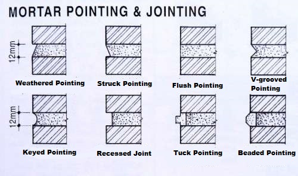
Figure 1: all types
3.1. Flush Pointing
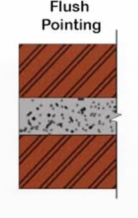
For a ‘flush’ joint profile no further working need be done. Because flush joints are formed without compacting the surface of the mortar they are less resistant to water penetration than profiles formed by tooling. For other joint profiles the mortar is left to stiffen slightly and then tooled. The time taken for the mortar to reach the correct consistency varies considerably and checking should start after approximately 10 minutes.
3.2. Rubbed, Keyed or Grooved Pointing
the mortar is pressed into joints by trowel and well finished off with the face of masonry surface. After that, the joint is pressed by back by small - diameter steel lengthwise (6 mm dia) It will form a curved arc groove into a mortar joint. The vertical joint also finishes similar manner.
Concave pointing is formed by making the mortar flush with the face brick then struck with a brick jointer. The jointer keeps the mortar flush to the bed on the masonry units while slightly concaving the middle of the joint. Since it’s easy to achieve and offers a high level of weather protection, this joint is commonly used.
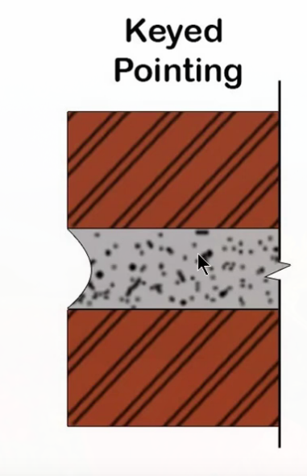
Figure 2: Keyed Pointing
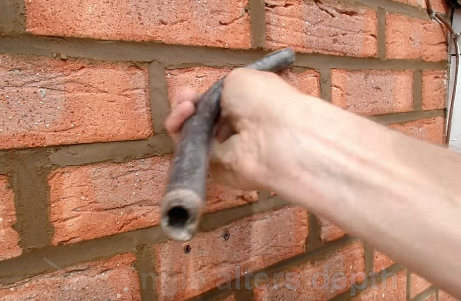
Figure 4: Self made pointing tool
3.3. V-Grooved Pointing
Similar to keyed pointing work. The mortar filled and pressed into a joined. After that, the V shaped groove is formed in the joint by use of V shaped tool.
q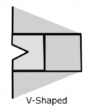
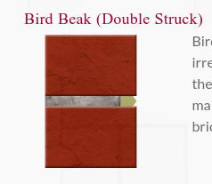 Bird Beak: Although today it’s mainly applied during period restoration, it can work on more modern buildings though is best avoided if the brickwork is unprotected and/or faces regular winds. Damaging rainwater will collect in the bottom.
3.4. Recessed Pointing / Raked Joint
- Pressed pointing face is kept vertical
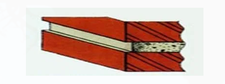
Figure 5: Recessed Pointing
Recessed joints impede the flow of rainwater down the surface of the brickwork, which tends to get wetter than it does with other profiles. For this reason recessed joints are not recommended unless the bricks are eminently frost-resistant.
They are not recommended in locations liable to severe exposure to wind-driven rain for brickwork in which resistance to water penetration is important.
3.5. Weathered Pointing / Weather Struck Pointing
. Weathered pointing is a modification of flush pointing. The face of the pointing is kept inclined, with its upper edge pressed inside the face by about 10 mm. Weathered pointing throws off rain water and is considered fairly durable; however, it’s fairly difficult to achieve. (Source)
The mortar pressed into a joint and whil the mortar is still fresh the top of the horzontal joints is neatly pressed back by 3-6mm with the pointing tool. They look like sloping from the top of the joint to bottomo of joint .
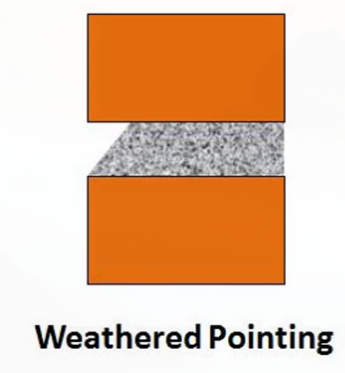
Figure 6: weathered pointing
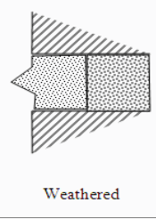
Figure 7: weathered
3.6. Weather Struck and Cut pointing
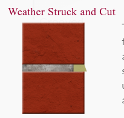
Figure 8: weater struck and cut
The inset (top) edge in Weather Struck and Cut joints is created as it is in regular Weather Struck, but the forward (bottom) edge is projected about 2mm beyond the brick surface.
3.7. Beaded Pointing
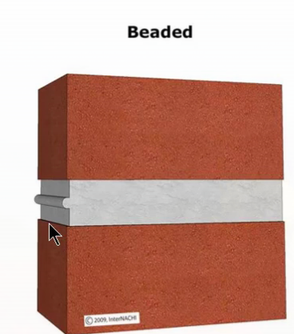
Figure 9: Beaded Pointing
Mortar pressed into a masonry joint and concave grooves are formed into a joint by using a stell tool having a concave shape. It gives an exvellent appearance to the mortar joint but is liable to get damaged quickly. So not used much.
Beaded pointing is used almost exclusively in historical restorations. Beaded joints can be much more noticeable, making the mortar joints part of the structure’s visual aesthetic.
3.8. TODO Struck Pointing
the top edge of the joint is pressed inside around 10 mm compared to the bottom corner. It will form slope from top to bottom so that rain wall will drain off quickly.
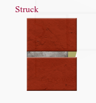
Figure 10: Struck
3.9. TODO Tuck Pointing
- The mortar joint is filled and pressed to the level surface of masonry
- While mortar is still fresh grooves are cut in the mortar joint (slot of size 5mm width and 3 mm depth). It is then filled with white cemenet putty, kept projecting beyond the face of the joint by 3mm.
- In case these projections are done in a mortar then it is called as bastard pointing or half tuck pointing.
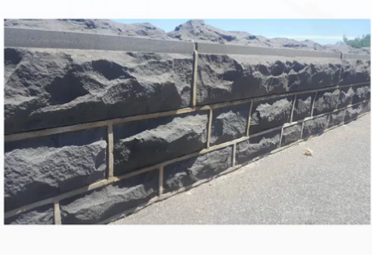
Figure 11: Tuck Pointing
Why projection? and why the name
In this case mortar is pressed in the raked joint first and finishing flush with the face.
While the pressed mortar is green, groove or narrow channel is cut in the center of groove which is having 5mm width and 3mm depth. This groove is then filled with white cement putty, kept projecting beyond the face of the joint by 3 mm. if projection is done in mortar, it is called bastard pointing or half tuck pointing.
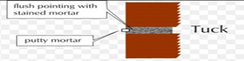
Figure 12: Tucked Pointing
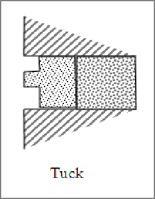
Figure 13: Tuck Pointing - Mortar flushed to joints, mortar cut to form raised ruler outside - Bastard Tuck
*
4. Tool
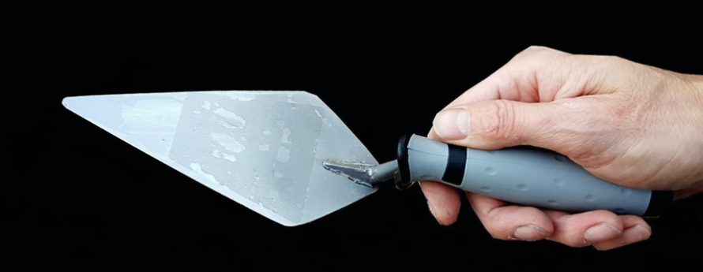
Figure 14: Pointing Trowel (https://www.youtube.com/watch?v=jPcp0iLoJtM)
5. Process
5.1. Cleaning/Raking
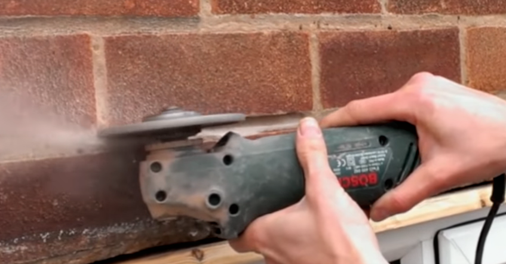
Figure 15: clean
- For freshly laid brick: All the joints in masonry are raked down to a depth of 20mm while the mortar is still soft. The joints and surface are cleaned and then thoroughly wetted. It is preferable when the joint has not completed final setting time (in plastic state). It is easy to rake and apply mortar in this condition.
- Griding requirement Depends on the depth of key
- If there is moss, then scraping would be necessary
The existing masonry joints are cut out to a uniform depth of approximately ¾”, or until sound mortar is reached. The joints and surface are cleaned of debris, and thoroughly wetted
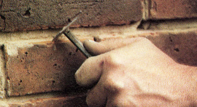
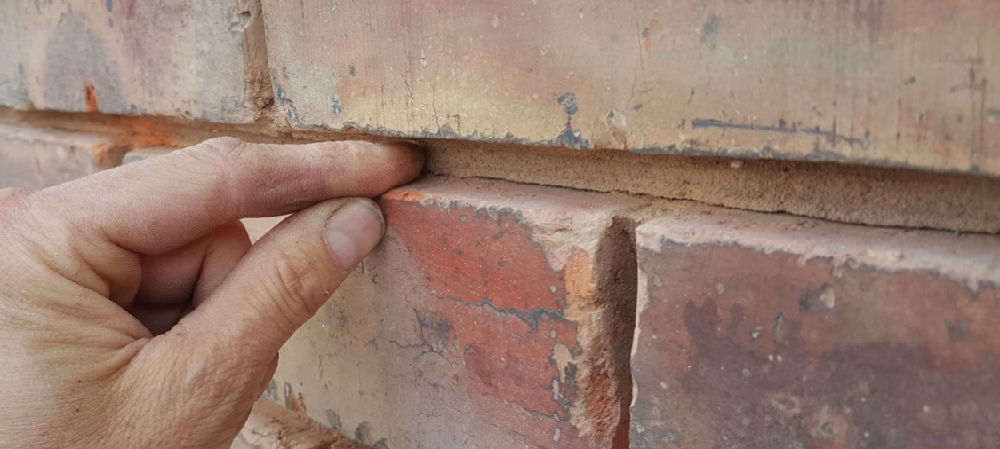
Figure 16: 15 to 18 mm